中年人提高跑量的意外之喜：最大摄氧量首次突破62！
一、关于最大摄氧量的常识
1️⃣ 最大摄氧量（VO₂max）也可称为 有氧适能
这两个词都很常见，虽表述不尽相同，但其实都是一个意思。
有氧适能是苹果 iOS 系统中健康 APP 其中的一个项目，在使用 Apple Watch 之后，苹果有一套算法来评估有氧适能水平。
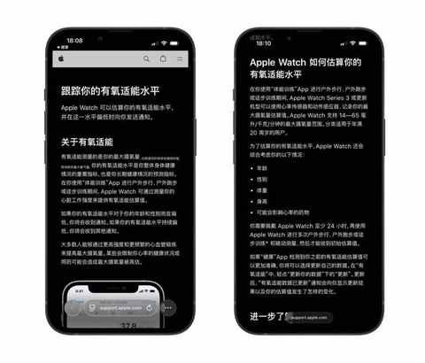
2️⃣ 要关注 最大摄氧量 的 阶段性 走势
每款运动手表测出来的数值是差别的，各家算法不一样，个体差异更是不容忽视。
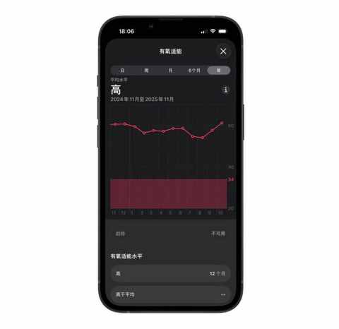
例如：身高体重类似且运动能力相当的两个人：张三和李四。
张三用的是 Apple Watch，李四用的是佳明手表，两个人即使运动习惯一模一样，两个人测出来的最大摄氧量也有很大的可能数值是不一样的。
3️⃣ 最大摄氧量与有氧能力正相关
最大摄氧量是衡量有氧能力的“天花板”，而有氧能力则是在这个天花板下进行各种活动和运动的实际表现。
日常想测试自己的有氧能力超级简单，无需跑 5km 或 10km，只用试试看自己一口气能爬几层楼而不喘，也能定期用这种方式测试自己的有氧能力是在进步还是退步。
不得不提，爬楼梯是一个执行难度低且不太受天气影响的有氧运动，偶尔提提速或负重爬楼，也能提高单次运动的强度。
之前写过几篇关于有氧运动的文章，给感兴趣的朋友们做个参考：
- 燃脂效率比拼：9种运动一年的热量消耗分析
- 跑步 or 骑行：一年有氧运动的个人体验与建议
- 从骑行转到跑步：一个中年人两年有氧运动的变化
- 90 年，35 岁，跑步两年半，首次月跑量突破200km是什么体验？
4️⃣ 最大摄氧量会随年龄增长而下降
这是岁月催人老的具象化表现之一，是物理规律。
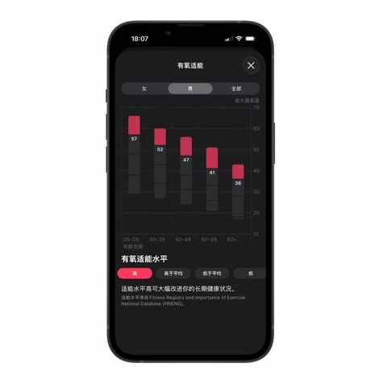
正如《超越百岁：长寿的科学与艺术》一书中所阐释的一样，最大摄氧量随着年龄的增长而下降（如下图所示）：
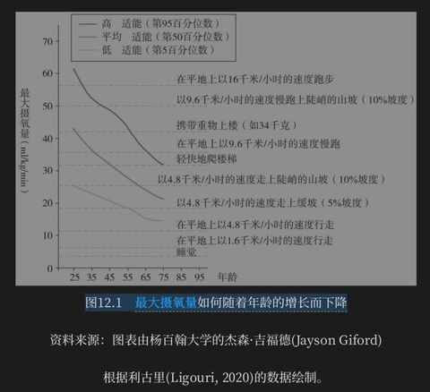
但这个曲线我们自己能定义！通过规律锻炼和运动，能让你的最大摄氧量位置在每个年龄段都是较高水平，也从另一个角度诠释了：生命在于运动！
只要坚持，等我们到 80 岁的时候，也能和下面两位 80 岁的老人一样！
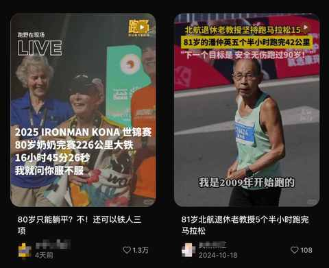
二、跑量提高之后
1️⃣ 平均配速提升
从 8 月的 6 分 07 每公里到 10 月的 5分34秒每公里。
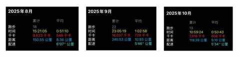
2️⃣ 更稳的心率
国庆期间的第一个10km，平均心率为 129。
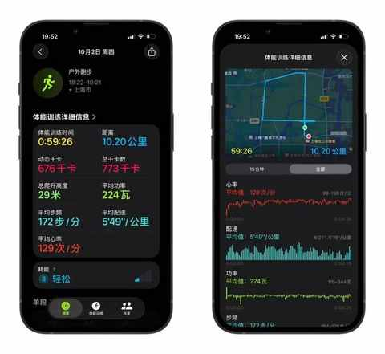
昨天下午跑的 15km，配速 5 分 19 秒每公里，平均心率为 140。
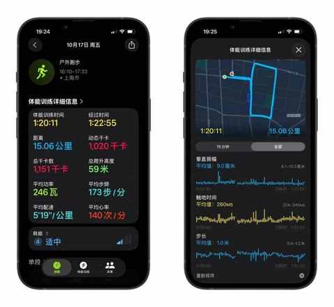
3️⃣ 最大摄氧量持续走高
在跑步的过程中的感受并不明显，和汽车的零百加速带来的推背感截然不同。
最大的感知是想提速的时候呼吸节奏能保持的更均衡更持久。
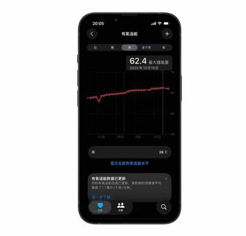
在跑的过程中查看手表上的数据刚开始会以为错了，因为配速提高的同时心率上升的很少，可能在下一场半马比赛中就能深刻的感受到一些相比去年的变化。
虽然最大摄氧量提高了，但我能达到的最大速度依然和去年类似，这个也从侧面说明要想稳步提速，最大摄氧量只是基础，必须结合力量训练，也要按相关课表高质量完成每次训练。
三、小结
在盘点运动数据的时候，猛然发现两年多前，也就是我刚开始有意识规律的做有氧运动的时候，当时的最大摄氧量才 42.1，以这个数值为参考我最大摄氧量的提高超过 50%！
练就有效！什么时候开始 运动 都不晚！
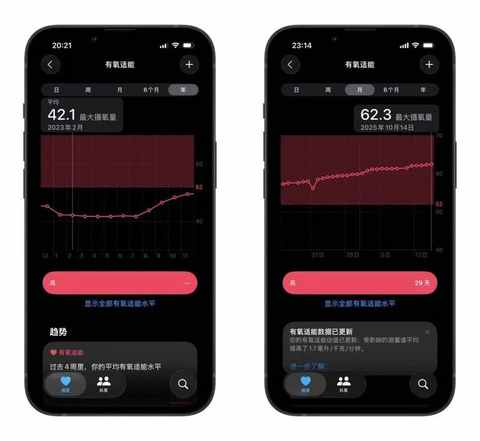
在此，借助《超越百岁：长寿的科学与艺术》中的一幅示意图来厘清这个关系。
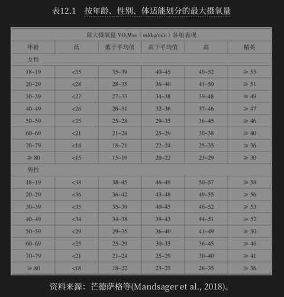
该图表清晰展示了不同年龄和性别的最大摄氧量的等级划分。
希望今天的内容能让大家对最大摄氧量有一些基础的了解，如果想对最大摄氧量一个更深入的了解，不妨看看这本《超越百岁》。
读完《超越百岁》，让你更有把握活到一百岁！
近期文章
告别选择困难症！翻遍留言区整理的宝藏跑步装备清单！
一双 “问题” 跑鞋带来的顿悟：问题的答案藏在细节里……
没想到送老婆去面试，居然是一次 “班味” 之旅
开了7年混动后投向纯电9个月，一个中年新能源车主的生活有了哪些新变化？
车型太多，普通人怎么选新能源车？分享一个更符合普通人的选车方法！
弯路没少走！8年新能源车主的真心话：这10件车载好物，日常用车真的离不开！
国庆假期第一天，三个沪漂中年男人的饭局
哪个瞬间让你猛然意识到：自己真的结婚了？